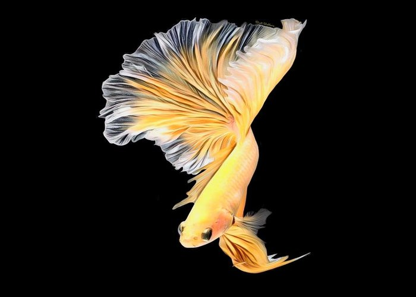

Cara Merawat Ikan Cupang
Saat ini, banyak sekali yang sudah memelihara Ikan Cupang baik itu yang dibudidayakan atau hanya untuk menjadi teman dikala kita sedang bosan. Dari sekian banyak ikan hias yang ada, Ikan Cupang merupakan salah satu ikan hias yang mudah dipelihara. Adapun cara untuk merawat ikan cupang akan dijelaskan sebagai berikut.
Cara Mengatur Habitat Cupang Terbaik
1.Akuarium
Bettas membutuhkan akuarium dengan setidaknya 3 galon (11 liter), filter, dan pemanas.
Siapkan rumah baru mereka setidaknya satu hari sebelum mereka tiba. Akuarium harus
berada di dekat sumber listrik, di area dengan lalu lintas rendah, jauh dari sinar
matahari langsung dan angin.Air beratnya sekitar 8 pon per galon. Pilih dasar yang
sangat kokoh dan stabil untuk akuarium Anda, lalu isi tangki dengan air.
Ada stan khusus yang dirancang untuk mendukung akuarium serta starter kit ikan cupang
untuk memastikan Anda memiliki semua kebutuhan dasar.
2.Air
ilter ikan cupang Anda akan membantu menjaga kebersihan air, tetapi Anda juga harus
memastikan tangki ikan Anda tetap pada suhu yang tepat. Suhu air ikan cupang harus
sekitar 77 -82°F (23-27°C). Pastikan untuk menggunakan air yang dideklorinasi! Toko
menjual dechlorinator air dan kondisioner air untuk memastikan air akuarium mereka dalam
kondisi sempurna.
3.Saring
Filter akuarium harus mampu mengolah semua air di dalam tangki tiga hingga lima kali
dalam satu jam. (Misalnya, filter dalam tangki 20 galon perlu mendorong setidaknya 60
galon air setiap jam.) Ikuti petunjuk produsen untuk memilih dan memasang filter.
4.Pemanas
Untuk menjaga agar suhu air ikan cupang tetap pada kisaran yang tepat, Anda bisa
menggunakan pemanas akuarium dan termometer. Pilih pemanas akuarium dengan daya 5 watt
untuk setiap galon air di dalam akuarium . Akuarium besar mungkin membutuhkan pemanas di
kedua ujungnya. Tempatkan pemanas cukup dekat dengan filter untuk mendistribusikan air
hangat. Jalankan filter tangki dan lampu kap tangki selama 24 jam, lalu periksa suhu air
dan sesuaikan pemanas jika perlu.
5.Lampu
Cahaya bukanlah detail terpenting dalam merawat ikan cupang Anda , tetapi Anda harus
meniru siklus siang dan malam sebaik mungkin. Tidak disarankan untuk meninggalkan tangki
ikan cupang Anda di bawah sinar matahari langsung, karena dapat menyebabkan alga tumbuh.
Lampu akuarium buatan bisa membantu!
6.Substrat
Lapisan 1-2 inci kerikil akuarium di bagian bawah tangki. (1½ pon kerikil per galon air.)
Bilas kerikil sebelum memasukkannya ke dalam akuarium; tidak pernah menggunakan sabun.
7.Dekorasi:
Hiasi akuarium ikan cupang Anda dengan dekorasi tangki ikan seperti tanaman buatan, ornamen
, dan lainnya untuk menambahkan kepribadian pada lingkungannya.
Bagaimana Saya Harus Memperkenalkan Cupang Saya ke Tangki Mereka?
Setelah Anda membawa pulang ikan cupang Anda, letakkan di akuarium Anda di dalam tas tempat mereka masuk selama 15 menit agar dapat terbiasa dengan suhu air yang baru. Selanjutnya, gunakan jaring untuk memindahkan cupang ke akuarium Anda. Jangan menambahkan air dari kantong ke dalam tangki Anda. Keseimbangan kimia dalam akuarium Anda akan berubah dengan setiap ikan baru yang Anda masukkan, jadi periksalah pH air, kadar amonia, nitrit, dan nitrat secara teratur menggunakan alat uji akuarium. Pastikan untuk hanya menambahkan satu ikan dalam satu waktu.


Akankah Ikan Cupang Saya Perlu Pergi ke Dokter Hewan?
Jika cupang Anda menunjukkan salah satu dari gejala Penyakit atau kesusahan ini, bicarakan dengan dokter hewan yang mengetahui kesehatan Nafsu makan menurunSirip Dijepit ke Samping Menggores Tubuh di atas Batuan Pembengkakan Perut Kulit atau Sirip Meradang atau Berubah Warna Anda dapat membuka “Cari dokter hewan ikan” di fishvets.org atau wavma.org untuk menemukan informasi lebih lanjut.
Apa yang Harus Saya Beri sebagai Makanan Ikan Cupang Saya?
Beri ikan makanan pelet ikan cupang 1-2 kali sehari dan ikuti rekomendasi produsen untuk frekuensinya. Bettas adalah karnivora, jadi lengkapi makanan ikan cupang dengan udang air asin beku atau kering beku atau cacing tubifex.